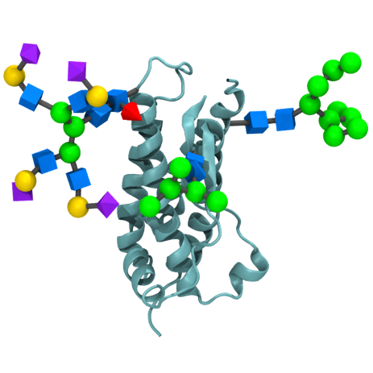

GlyGen's online library of resources for science in glycobiology.

Glycan
Protein

| Category | Resource | Description | Link | Glycan | Protein | GlycoProtein |
|---|---|---|---|---|---|---|
| Database | CAZy | Description | link | - | - | - |
| Database | CSDB: Carbohydrate Structure Database | Description | link | - | - | - |
| Database | Glycomics@ExPASy | Description | link | - | - | - |
| Database | LipidBank | Description | link | - | - | - |
| Database | GlyConnect | Is a platform integrating sources of information to help characterise the molecular components of protein glycosylation. | link | - | - | - |
| Knowledgebase | CAYypedia | Description | link | - | - | - |
| Knowledgebase | Glycopedia | Description | link | - | - | - |
| Knowledgebase | UniCarbKB | Is a knowledge base for curated glycoconjugate information and their annotations. | link | - | - | - |
| Informatics Initiative | GLIC: Glycoinformatics Consortium | Description | link | - | - | - |
| Database/Tool | GlycoStore | Description | link | - | - | - |
| Data-processing Tool | GRITS Toolbox | Description | link | - | - | - |
| Tools | VirtualGlycome | Description | link | - | - | - |
| Integrated Databases | ACGG-DB | Description | link | - | - | - |
| Consortium/Inititative | MIRAGE | Description | link | - | - | - |
| Structure Repository | GlyTouCan | Is the international glycan structure repository. It assigns globally unique accession numbers to any submitted glycan. | link | Yes | - | - |
| Structure Repository | UniProt | Is a freely available, comprehensive resource of high quality protein sequences and functional annotations. | link | - | Yes | - |